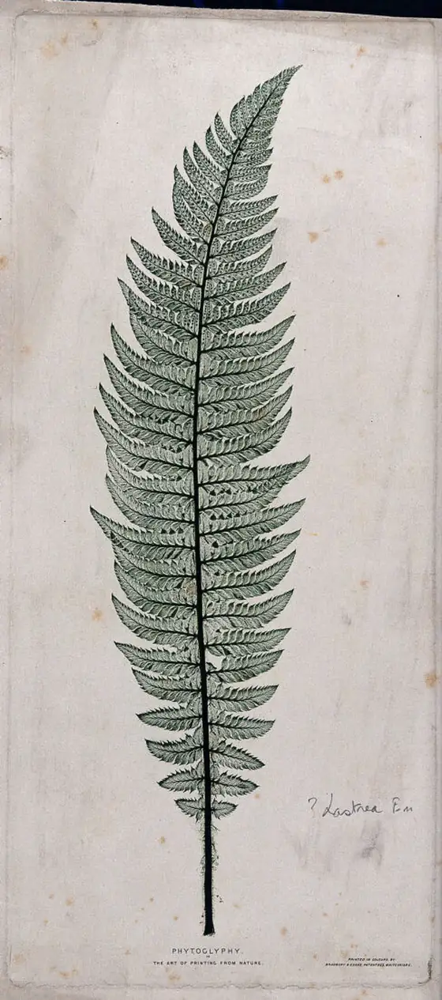

Simulación generativa · no es una imagen clínica
Lám. 0 Atlas vivo de oncología
Oncología en consulta.
Consulta guías, encuentra sociedades médicas y prepara una interconsulta con fuentes de referencia.
- 0 herramientas de práctica
- 0 fichas con fuente enlazada
- 0 congresos con fechas
- 0 cuentas, cookies o rastreadores
Lám. I Espacio de trabajo
Mesa de consulta
Lám. III Biblioteca
Recursos profesionales

Ficha Preparación de consulta
Prepara la interconsulta
Arma una lista de puntos para revisar con el equipo que recibe el caso.
Lám. IV Compromisos verificables
Hecho para confiar.
Cada compromiso se comprueba aquí mismo, en tu navegador, sin pedirte nada.
-
Privado por diseño
Sin cuentas, cookies ni rastreadores. Lo que anotas vive en esta pestaña y se borra al recargar.
Comprobando…
-
Funciona sin conexión
Tras la primera visita completa, el atlas vuelve a abrir aunque no tengas internet.
Comprobando…
-
Accesible
Teclado, lector de pantalla, texto grande, tema oscuro y movimiento reducido.
-
Fuentes verificables
Cada ficha nombra a su institución y enlaza a la fuente original para confirmar vigencia.
Comprobando…